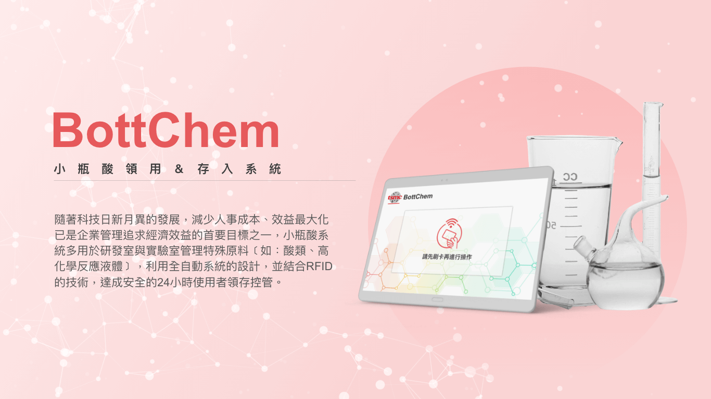
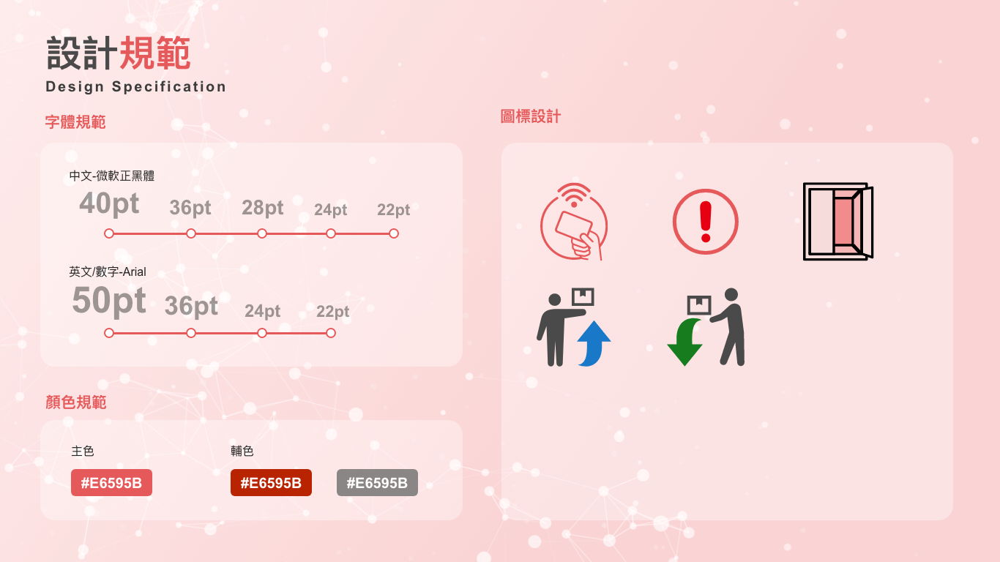
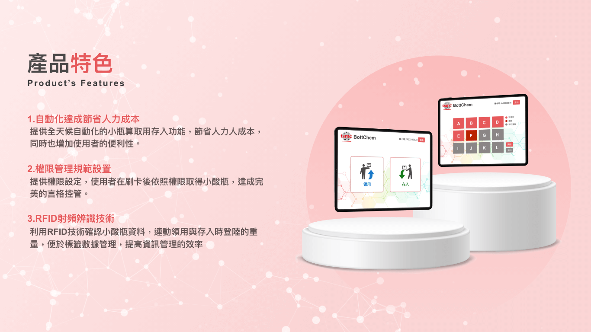
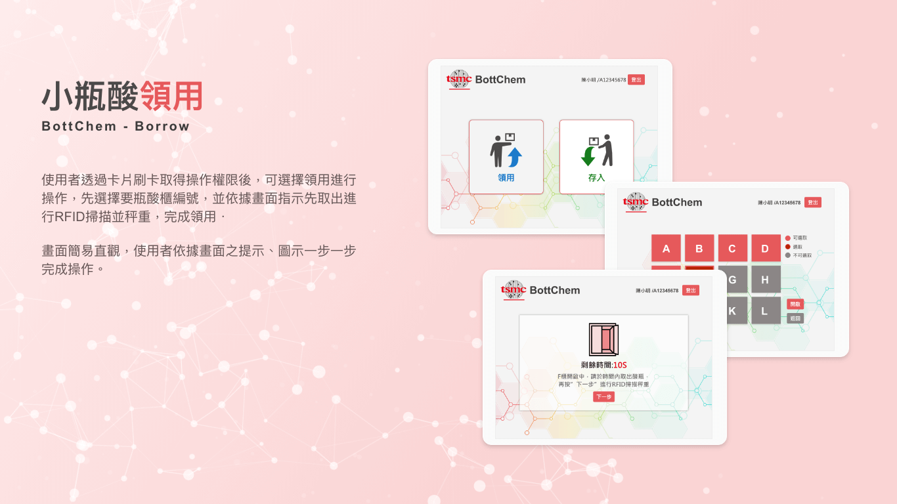
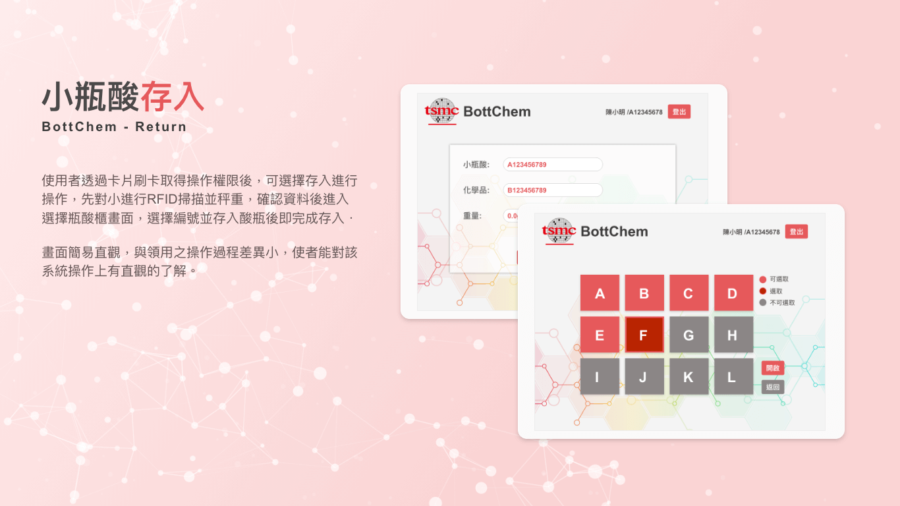

BottChem-UI設計
系統名稱
BottChem
設計產品
BottChem系統之使用者介面(用於平板)
設計理念
一般軟體軟體系統大多以藍、綠為主色調，雖然有科技感但對於使用者來說相當有距離感，這次大膽採用明亮、活潑的的紅色以及簡潔的白，希望使用者能在視覺上跟舒適及親切，畫面簡易直觀，使用者依據畫面之提示、圖示一步一步完成操作。
產品介紹
隨著科技日新月異的發展，減少人事成本、效益最大化已是企業管理追求經濟效益的首要目標之一，小瓶酸系統多用於研發室與實驗室管理特殊原料﹝如：酸類、高化學反應液體﹞，利用全自動系統的設計，並結合RFID 的技術，達成安全的24小時使用者領存控管。
產品介紹
1.自動化達成節省人力成本
提供全天候自動化的小瓶算取用存入功能，節省人力人成本，同時也增加使用者的便利性。
2.權限管理規範設置
提供權限設定，使用者在刷卡後依照權限取得小酸瓶，達成完美的言格控管。
3.RFID射頻辨識技術
利用RFID技術確認小酸瓶資料，連動領用與存入時登陸的重量，便於標籤數據管理，提高資訊管理的效率




